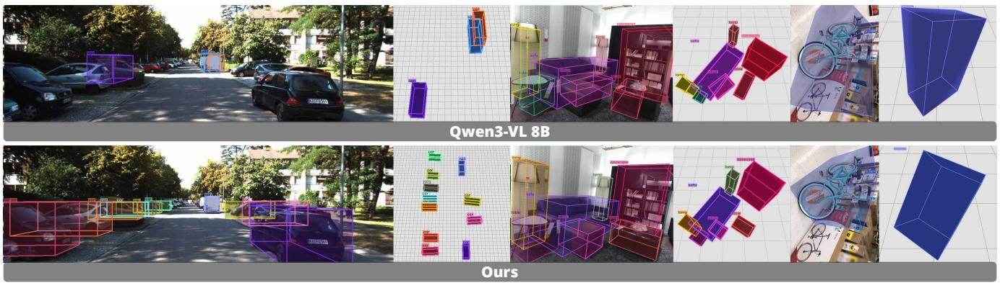

Figureure 2 · Method overviewFigure 2. Method overview. GR3D builds on Region-VLMs by adding streaming region insertion for visual Chain-of-Thought reasoning. During CoT, the model repeatedly predicts a region, extracts its visual embedding, and reinserts a region token into the text sequence, enabling step-by-step spatial reasoning with dynamically refreshed visual cues.这张图概括 Grounded 3D-Aware Spatial Vision-Language Modeling 的整体方法流程。阅读时先看模块之间传递的训练信号，再看作者如何把目标拆成可优化的子问题。

Figureure 6 · Qualitative comparison on 3D object detection between our model and QwFigure 6. Qualitative comparison on 3D object detection between our model and Qwen3-VL 8B [45]. Our model produces more accurate 3D bounding boxes with fewer missed objects, demonstrating stronger spatial grounding and detection reliability.这张图/表用于判断 Grounded 3D-Aware Spatial Vision-Language Modeling 的实验收益来自哪里。重点看替换、消融或跨模型设置下趋势是否一致，而不是只看单个最高分。